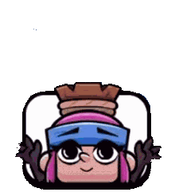

Para mi Albita
Mi niña, imagino que no es así como esperabas la carta, pero me parecía muy original hacértela así y espero que te encante.
Te escribo esta carta porque te amo, y quiero recordártelo y que puedas recordarlo cada vez que mires esta flor. Eres la mejor persona que he encontrado en mi vida, aunque esto probablemente ya se pueda saber por mi anterior carta, pero no puedo desaprovechar la oportunidad para recordarte lo genial que eres. Ya que siempre me dices que te explique como te amo, te voy a dar algunas pistas, me encanta y produce mucho amor siempre que me yappeas (lo único que pido es que lo hagas mientras me tocas el pelo), cuando hacemos cualquier actividad y tengo el privilegio de tenerte de mi lado, cada vez que llegamos a una tregua en una discusión, cada vez que vamos al gimnasio a hacer super entrenos juntos, cuando te beso y descubro que tienes los ojos abiertos de par en par, cuando me ayudas en mis proyectos, cada vez que me dejas explicarte algo de mi carrera para ayudarme, cuando decides venir a ver la (superior) feria de Córdoba y nos ponemos a bailar, en cada regalo que me planeas con toneladas de cariño, cada vez que hacemos videollamada, en cada consejo que me das, cada vez que leo tus cartas (eres MUY buena escritora)...
La verdad que podría seguir, pero prefiero que nos demos un beso cuanto antes (en cuanto acabes de leer esta carta).
Cada vez que me distraigo en mis propios pensamientos, no puedo evitar pensar con ilusión el día en el que seamos libres, y podamos hacer todo lo que queramos.
La verdad es que tenías razón en tu última carta, una sola vida a tu lado es muy poco y ten seguridad de que en lo que más pienso es en pasarla contigo. No te haces una idea de las ganas que tengo de llevarte a la playa cuando nos apetezca en mi coche, o de que podamos dormir abrazaditos cada noche. No puedo esperar, y el hecho de que cada vez quede menos me hace ver cualquier adversidad como algo insignificante.
No te doblegues, sigue siendo fuerte, te quiero y admiro, eres la mejor (y también la mejor para que lideremos el clan juntos).
¡Te amo mucho!

Con todo mi amor, David